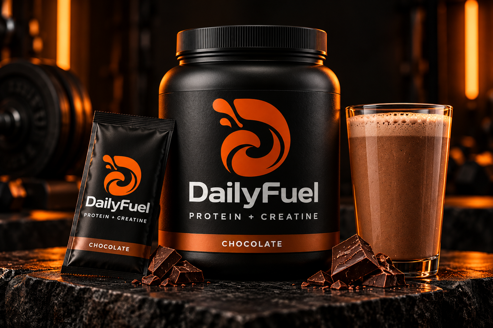

Whey protein
A convenient way to add to your daily protein intake.
30–40gPROTEIN / TARGET PER SERVING
Protein. Creatine. One shake to look forward to.
We’re building DailyFuel for people who train hard
and want their daily routine to taste good.

Buying both. Measuring both. Carrying both.
We think your protein and creatine routine could be simpler. That’s the idea we’re developing.
A convenient way to add to your daily protein intake.
Included in the blend, so you can skip the separate scoop.
Our brief: a smooth shake that tastes good with water. Every sample brings us one step closer.
Made toFormulation targets, not final nutrition values. Exact amounts, ingredients and directions will be confirmed before launch.
We’re exploring familiar favourites and a local twist. Pick a concept and help shape what comes next.
The familiar favourite we want to get just right. Think rich cocoa and a creamy finish, without an overpowering sweetness.
Your choice stays on this device. No order or signup.
I’m 17, and I’m building DailyFuel from scratch. The goal is simple: bring protein and creatine together in a shake people actually look forward to drinking.
I’ve got manufacturing arranged. Now comes the work: developing flavours, refining the formula and finding out what people really want.
This is the beginning. I’m planning to document the samples, decisions and honest lessons along the way.
See where we’re at ↗Protein and creatine together. Taste at the centre of it all.
Manufacturing arranged. Formula, flavours and packaging taking shape.
Real feedback to help decide what makes it into the final shake.
Not yet. DailyFuel is in development. The packaging and flavours on this site are concepts, and orders are not open.
The planned base is whey protein with creatine monohydrate. The formula, exact serving amounts and full ingredient list are still being developed.
That’s the plan: sachets to try a flavour or take on the go, and tubs for your regular routine. Sizes and pricing will be confirmed before launch.
The planned formula uses whey, which comes from milk. Full allergen information will be provided with the final product.
A TikTok journey is planned. The official account link will be added here when it’s ready. For now, explore the flavour concepts and save your favourite on this device.
Something good is in the making.